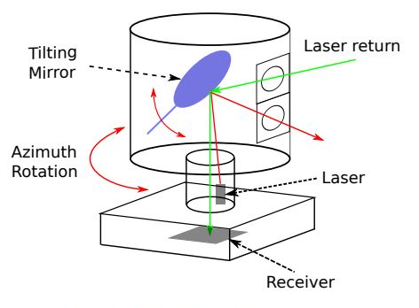
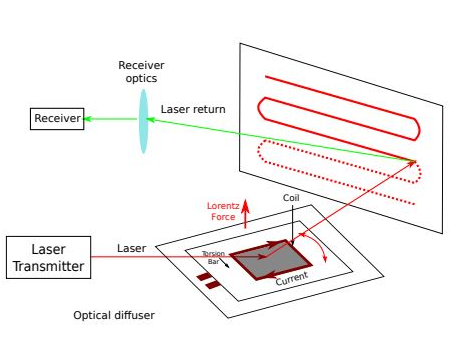
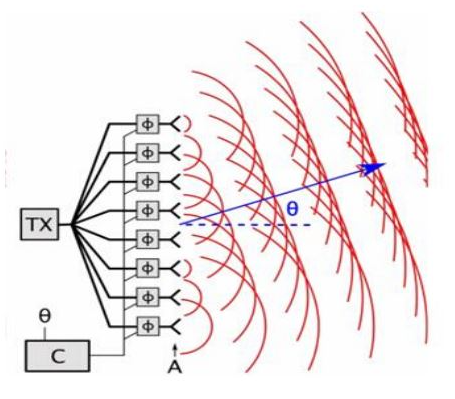
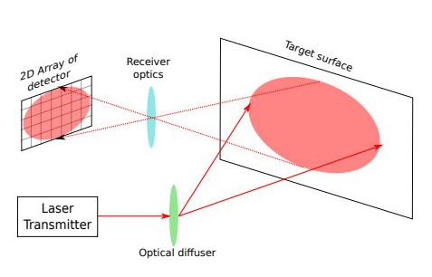

라이다란?
빛을 이용한 레이더로 자율주행자, 로봇 등의 눈이 되는 핵심 센서이다.
구동방식에 따른 라이다의 종류
| 종류 | |
|---|---|
|
Spinning Lidar 모터를 이용하여 물리적으로 센서를 회전시켜 주변을 스캔한다. 장점: 넓은 수평 시야각(360도). 상대적으로 좋은 데이터 정확도. 단점: 모터가 있기 때문에 가격이 비싸고 내구성이 약함. 360도를 봐야 해서 매립해서 사용할 수 없음. 낮은 해상도. |
 |
|
Scanning Lidar 모터가 없는, 한 방향을 스캔하는 라이다. 흔히 solid state lidar라고 불리지만 스캔방식에 따라 moving parts가 있는 방식도 있고 없는 방식도 있다. 통상적으로 moving parts가 있는 방식은 hybird solid state lidar라고 부르고, moving parts가 없는 방식은 true solid state lidar라고 부른다. 장점: 모터가 없어서 가격이 저렴하고 내구성이 좋음, 소형화 할 수 있음. 한 방향만 스캔하기 때문에 매립해서 사용할 수 있음. 높은 해상도. 단점: 좁은 수평 시야각. 상대적으로 떨어지는 데이터 정확도. |
1. MEMS Lidar 전압으로 기울기가 달라지는 작은 미러를 사용해서 스캔하는 방식.  2. OPA Lidar 광학 위상 모듈레이터가 렌즈를 통과하는 빛의 속도를 제어하여 전방으로 나가는 빛의 파면 형상을 제어하고 빔을 여러 방향으로 쏘아 스캔하는 방식.  3. Flash Lidar 레이저를 전방에 비추고 레이저 가까이 위치한 수신기에서 반사된 산란광을 포착, 단 하나의 이미지로 전체 장면을 포착하는 방식.  |